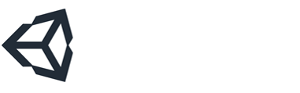
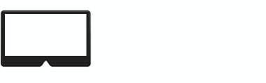
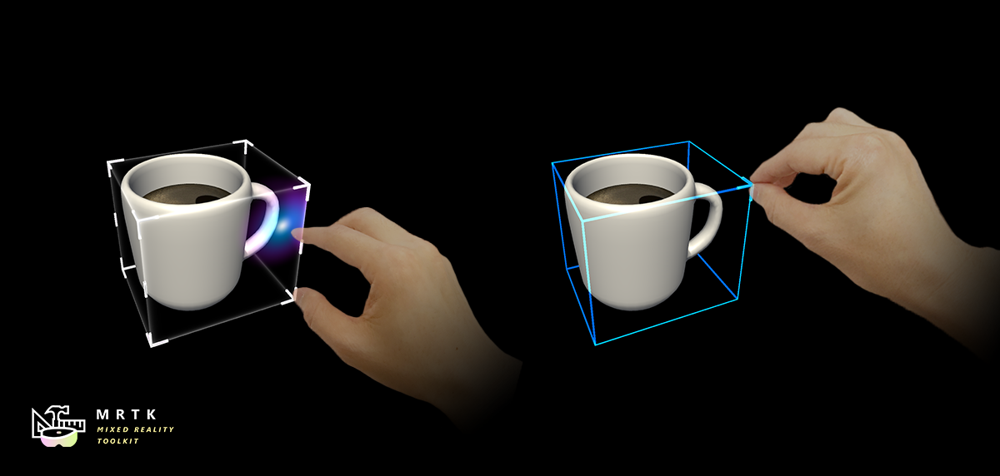
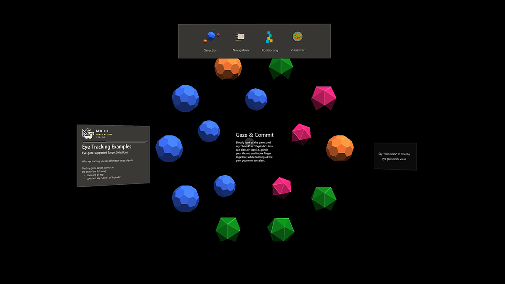
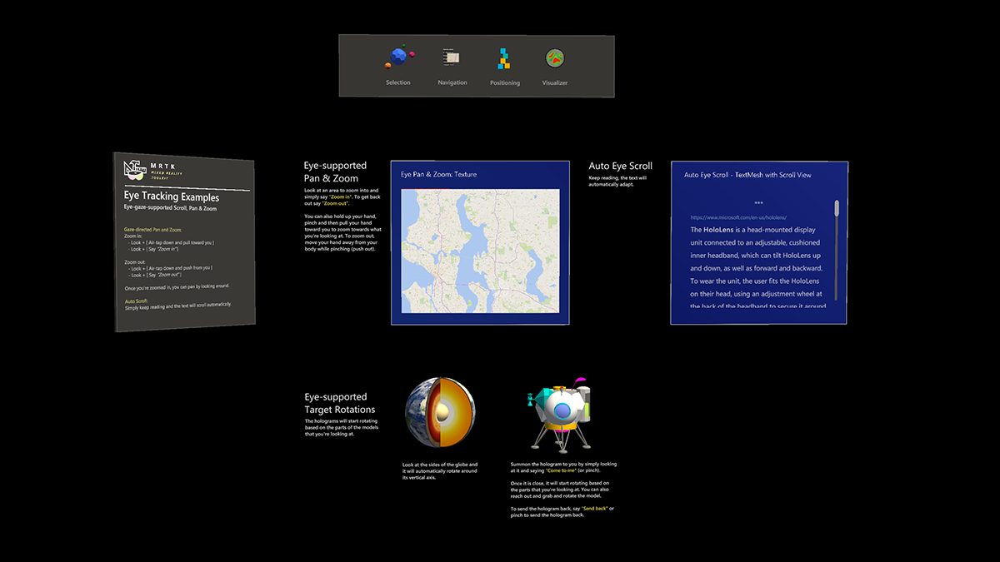
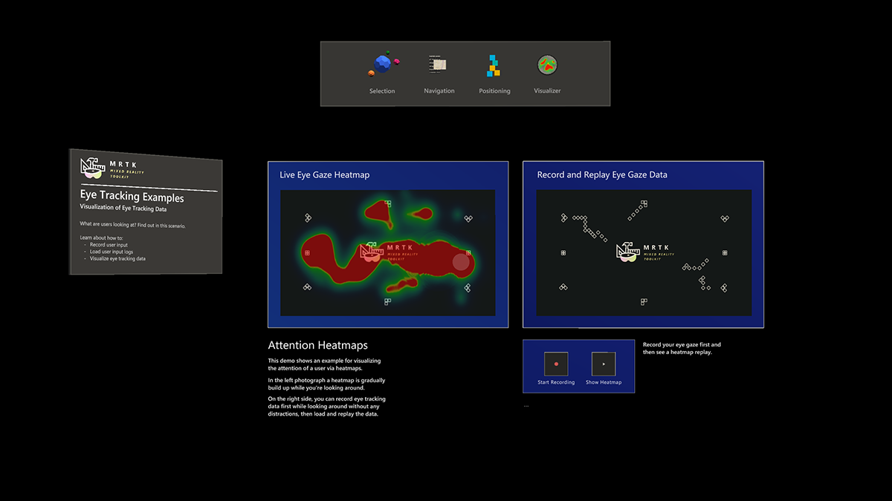

什么是 Mixed Reality Toolkit
MRTK-Unity 是一个微软驱动的项目，它提供了一系列组件和功能，用于加速Unity中跨平台的MR应用程序开发。以下是它的一些功能:
- 提供 基本构建模块用于HoloLens, Windows Mixed Reality 和 OpenVR的Unity开发.
- 允许快速原型设计通过编辑器内模拟使您可以立即查看更改。
- 作为可扩展框架运行，为开发人员提供了替换核心组件的能力。
- 支持广泛的平台，包括
- Microsoft HoloLens
- Microsoft HoloLens 2
- Windows Mixed Reality headsets
- OpenVR headsets (HTC Vive / Oculus Rift)
- Ultraleap 手动跟踪
MRTK 入门
入门 |
MRTK 概述 |
功能指南 |
API 参考 |
|---|
构建状态
| Branch | CI Status | Docs Status |
|---|---|---|
mrtk_development |
所需软件
 Windows SDK 18362+ Windows SDK 18362+ |
 Unity 2018.4.x |  Visual Studio 2019 Visual Studio 2019 |
 模拟器 (可选) |
|---|---|---|---|
| 要使用MRTK v2生成应用程序，您需要Windows 10 May 2019 Update SDK。 要运行沉浸式头显的应用程序，您需要Windows 10 Fall Creators Update。 |
Unity 3D 引擎支持在Windows 10 中构建混合现实项目 | Visual Studio用于代码编辑，部署和构建UWP应用程序包 | 模拟器允许你在没有设备的模拟环境中测试应用程序 |
功能区
| 输入系统 |
手动跟踪 (HoloLens 2) |
眼动跟踪 (HoloLens 2) |
配置文件 |
手动跟踪 (Ultraleap) |
|---|---|---|---|---|
| UI 控件 |
Solvers |
多场景 管理 |
空间 感知 |
诊断 工具 |
| MRTK 标准 Shader | Speech & Dictation |
边界 系统 |
编辑器内 模拟 |
实验性 功能 |
UI和交互构件模块
 Button Button |
 Bounding Box |  Manipulation Handler Manipulation Handler |
|---|---|---|
| 按钮控件，支持各种输入方法，包括HoloLens 2的全连接手 | 用于操纵3D空间对象的标准UI | 用一只手或两只手操纵对象的脚本 |
 Slate Slate |
System Keyboard |  Interactable Interactable |
| 2D样式平面，支持通过全连接手输入来滚动 | 在Unity中使用系统键盘的示例脚本 | 一个脚本用于使对象可交互，同时具有可视化状态和主题支持 |
 Solver Solver |
 Object Collection Object Collection |
 Tooltip Tooltip |
| 多种对象定位行为，例如tag-along, body-lock，恒定的view size 以及surface magnetism | 用于将一组三维对象进行排列的脚本 | 具有灵活 anchor/pivot system 的注释UI，可用于标记运动控制器和对象 |
| Slider |  MRTK Standard Shader MRTK Standard Shader |
 Hand Menu Hand Menu |
| 用于调整值的Slider UI，支持直接的手部跟踪交互 | MRTK 标准着色器支持多种快速设计元素并且有性能保证 | 使用Hand Constraint Solver 锁定在手部的UI，用于快速访问 |
| App Bar | Pointers |  Fingertip Visualization Fingertip Visualization |
| 手动激活Bounding Box的UI | 了解各种类型的指针 | 指尖的视觉可见会提高直接交互的自信 |
 Near Menu Near Menu |
Spatial Awareness | Voice Command / Dictation |
| 演示如何使用Solver将对象附加到手部关节上 | 使您的全息对象与物理环境互动 | 集成语音输入的脚本和示例 |
 Progress Indicator Progress Indicator |
 Dialog [实验性] Dialog [实验性] |
Hand Coach [实验性] |
| 用于数据通信过程或操作的可视指示器 | 请求用户确认或允许的UI | 当手势没有被教学时帮助指导用户的组件 |
| Hand Physics Service [实验性] |  Scrolling Collection [实验性] Scrolling Collection [实验性] |
Dock [实验性] |
| hand physics服务支持刚体碰撞事件和与全关节手的交互 | 可滚动3D对象的对象集合 | Dock允许对象移进和移出预定的位置 |
|  Eye Tracking: Target Selection |  Eye Tracking: Navigation |  Eye Tracking: Heat Map |
| 结合眼睛，声音和手部输入，轻松快捷地在整个场景中选择全息物体 | 了解如何根据您的所看向的地方自动滚动文本或流畅放大重点内容 | 示例用于记录，加载和可视化用户在您的应用程序中所看向的 |
工具
| Optimize Window | Dependency Window | Build Window | Input recording |
|---|---|---|---|
| 自动配置混合现实项目以优化性能 | 分析资源之间的依赖并识别未使用的资源 | 为混合现实应用程序配置并执行端到端构建过程 | 在编辑器中记录和回放头部运动和手动跟踪数据 |
示例场景
在示例场景中探索MRTK的各种类型的交互和UI控件。
您可以在 Assets/MixedRealityToolkit.Examples/Demos 文件夹下找到其他示例场景。
MRTK示例中心
使用MRTK示例中心，您可以尝试MRTK中的各种示例场景。
您可以在Release Assets 文件夹下找到HoloLens（x86），HoloLens 2（ARM）和Windows Mixed Reality沉浸式头显（x64）的预构建应用程序包。 使用Windows Device Portal 在HoloLens上安装应用程序.
请参阅示例中心README页面 以了解有关创建具有MRTK场景系统和场景转换服务的多场景中心的详细信息。
使用MRTK制作的示例应用
| 元素周期表 是一个开源示例应用程序，它演示了如何使用MRTK的输入系统和构建模块来为HoloLens和沉浸式头显创建应用程序体验。阅读移植故事: 使用MRTK v2将元素周期表应用程序引入HoloLens 2 | Galaxy Explorer 是一个开源示例应用程序，最初作为HoloLens 'Share Your Idea'系列的一部分于2016年3月开发。已使用MRTK v2更新了Galaxy Explorer，使用了HoloLens 2的新功能。阅读故事： HoloLens 2的Galaxy Explorer的制作 |
与社区互动
Join the conversation around MRTK on Slack. You can join the Slack community via the automatic invitation sender.
Ask questions about using MRTK on Stack Overflow using the MRTK tag.
Search for known issues or file a new issue if you find something broken in MRTK code.
For questions about contributing to MRTK, go to the mixed-reality-toolkit channel on slack.
This project has adopted the Microsoft Open Source Code of Conduct. For more information, see the Code of Conduct FAQ or contact opencode@microsoft.com with any additional questions or comments.
混合现实开发中心的有用资源
| 探索 | 设计 | 开发 | 发布 |
|---|---|---|---|
| 了解如何为HoloLens和沉浸式头显（VR）建立混合现实体验。 | 获取设计指南。构建用户界面。学习交互和输入。 | 获取开发指南。学习技术。了解科学。 | 为他人准备好您的应用程序，并考虑创建3D启动器。 |
Azure上的有用资源
Spatial Anchors |
Speech Services | Vision Services |
|---|---|---|
| Spatial Anchors是一种跨平台的服务。通过该服务，可以使用跨设备的，随时间变化仍保持在自己位置的对象创建混合现实体验 | 发现并将Azure支持的语音功能（如语音转文字，说话者识别或语音翻译）集成到您的应用程序中。 | 使用视觉服务（例如计算机视觉，人脸检测，情感识别或视频索引器）识别并分析您的图像或视频内容。 |
了解有关MRTK项目的更多信息
您可以在 our wiki 的Project Management部分下找到我们的规划材料。在迭代计划问题中，您始终可以看到团队正在积极研究的项目。
如何贡献
在 贡献上了解如何为MRTK贡献力量.
有关MRTK存储库中使用的不同分支的详细信息，请查看Branch Guide .